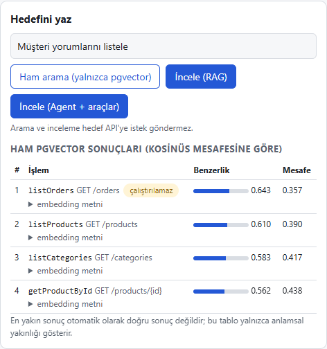
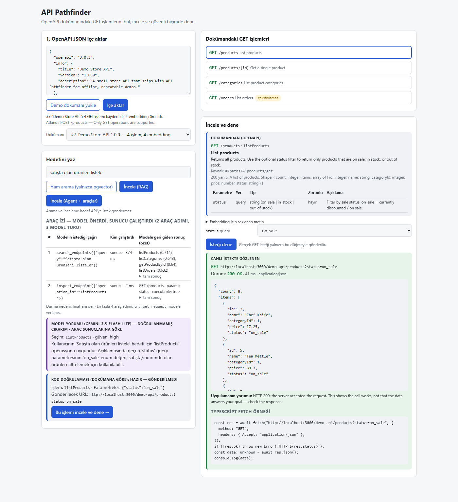
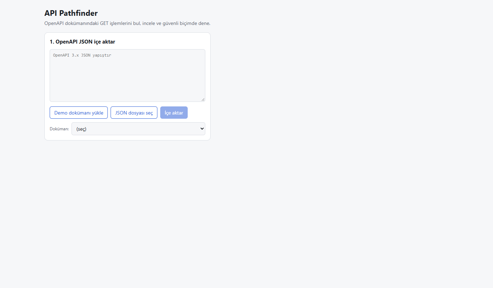
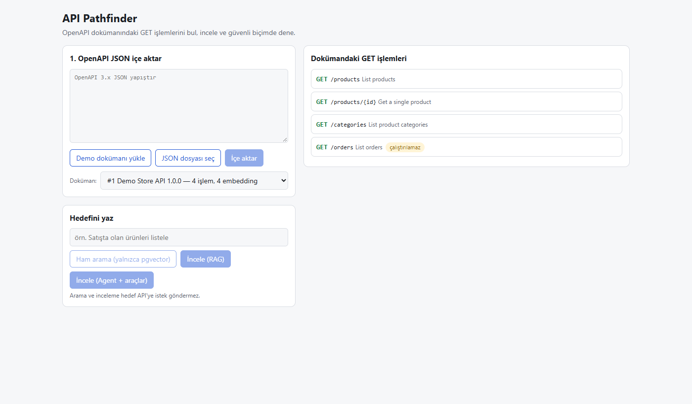
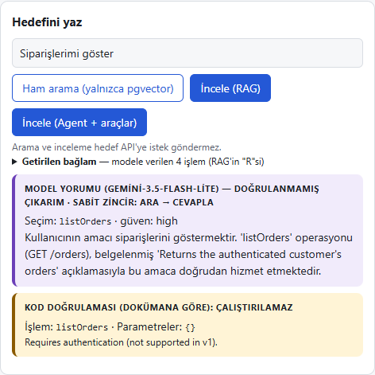
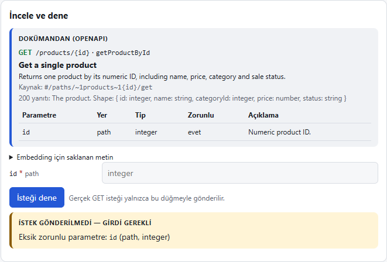
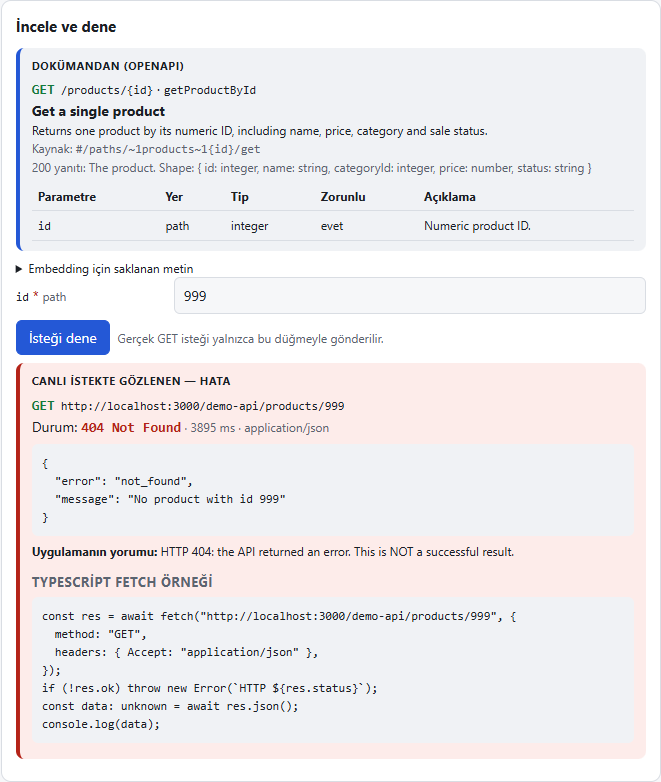

Bugün hemen her uygulama başka uygulamalarla konuşur: bir alışveriş sitesi ödeme sistemine, bir hava durumu uygulaması meteoroloji servisine bağlanır. Bu bağlantı noktalarına API denir ve her API'nin, hangi işlemleri sunduğunu anlatan bir dokümanı vardır. Bu dokümanlar çoğu zaman uzun, İngilizce ve teknik olur.
API Pathfinder'ın çözdüğü problem şu: “Bu API ile şunu yapmak istiyorum — hangi işlemi, hangi ayarlarla kullanmalıyım?” sorusuna hızlı ve doğrulanmış bir cevap vermek.
demo/store-openapi.json dosyasında.İnternetteki hemen her şey iki rol üzerine kuruludur: istemci bir şey ister, sunucu cevap verir. Tarayıcın (Chrome, Edge) bir istemcidir; bir web sitesini açtığında, o sitenin sunucusuna “bana bu sayfayı ver” der.
localhost, “bu bilgisayarın kendisi” demektir. Proje senin bilgisayarında çalıştığı için adresi http://localhost:3000'dir.
Port (3000, 5433 gibi sayılar), aynı bilgisayardaki farklı programların kapı numarasıdır: bir apartmanın adresi aynıdır,
daire numaraları farklıdır.
| Port | Kim dinliyor? |
|---|---|
3000 | API Pathfinder uygulaması (arayüz + sunucu + örnek mağaza API'si) |
5433 | Docker içindeki PostgreSQL veritabanı (bilgisayarında zaten 5432'de başka bir veritabanı olduğu için 5433 seçildi) |
| Ad | Ne olduğu (basitçe) | Bu projede görevi |
|---|---|---|
| TypeScript | Bir programlama dili. JavaScript'in, hataları erken yakalayan “tipli” hali. | Projenin neredeyse tüm kodu bu dille yazıldı. |
| Node.js | JavaScript/TypeScript kodunu tarayıcı dışında, bilgisayarda çalıştıran motor. | Sunucu tarafını çalıştırır. npm komutu da onunla gelir. |
| npm | Node'un paket yöneticisi: başkalarının yazdığı hazır kod parçalarını indirir. | npm install, npm run dev gibi komutlar. |
| React | Ekrandaki düğme, kutu, tablo gibi parçaları kurmaya yarayan kütüphane. | Arayüzün tamamı. |
| Next.js | React üzerine kurulu bir “çatı” (framework). Hem web sayfasını hem sunucu kodunu tek projede toplar. | Sayfa + /api/… uç noktaları + örnek mağaza. |
| PostgreSQL | Çok yaygın, ücretsiz bir veritabanı sistemi. | İçe aktarılan dokümanları, denemeleri, incelemeleri saklar. |
| pgvector | PostgreSQL'e “anlam benzerliği ile arama” yeteneği ekleyen eklenti. | Hedefine en yakın işlemleri bulur. |
| Docker | Programları hazır, taşınabilir kutular (konteyner) içinde çalıştırma aracı. | Veritabanını tek komutla kurup çalıştırır. |
| Google Gemini | Google'ın yapay zekâ modeli ailesi; internet üzerinden (API ile) kullanılır. | Metni sayılara çevirir (embedding), öneri ve açıklama üretir. |
| Git / GitHub | Git kodun geçmişini (her değişikliği) kaydeder; GitHub bu geçmişi internette saklayıp paylaşır. | Projenin geçmişi 7 kayıt noktası (commit) olarak saklı. |
API (Application Programming Interface — Uygulama Programlama Arayüzü), bir programın başka programlar tarafından kullanılmak üzere açtığı kapıdır. İnsanlar bir siteyi fareyle kullanır; programlar ise API ile, belirli kurallara göre yazılmış isteklerle kullanır.
| API sunmak | API kullanmak | |
|---|---|---|
| Rol | Sunucu / mutfak / vezne | İstemci / müşteri |
| Ne yapar? | Gelen isteği karşılar, cevap üretir | Başka bir sunucuya istek gönderir, cevabı işler |
| Bu projede | Örnek mağaza: /demo-api/products gibi adresler gelen isteklere ürün listesi döner | Pathfinder: “İsteği dene” düğmesine basınca mağaza API'sine istek gönderir |
HTTP, tarayıcıların ve programların sunucularla konuştuğu dildir. Her konuşma bir istek (request) ve bir yanıttan (response) oluşur. Bir isteğin en önemli parçaları: yöntem (ne yapmak istiyorsun), URL (nereye, neyle), yanıtın en önemli parçaları: durum kodu (ne oldu) ve gövde (gelen veri).
| Parça | Örnek | Anlamı |
|---|---|---|
| Şema | http:// | Hangi dil/protokol kullanılacak (https = şifreli http) |
| Sunucu + port | localhost:3000 | Hangi bilgisayar, hangi kapı |
| Taban yol | /demo-api | Bu API'nin sunucudaki “klasörü” |
| Yol (path) | /products | Hangi kaynak: ürünler |
| Sorgu (query) | ?status=on_sale | Ek filtre: “yalnızca satıştakiler”. ?'den sonra ad=değer çiftleri gelir, birden fazlaysa & ile ayrılır. |
Path parametresi ise yolun içine yerleşen değerdir: /products/{id} kalıbındaki {id} yerine 17 yazılınca
/products/17 olur (“17 numaralı ürün”). Query parametresi ise yolun sonuna, ?'den sonra eklenir.
Yöntem, isteğin niyetini söyler. En yaygın beşi:
| Yöntem | Niyet | Günlük hayattan | Veriyi değiştirir mi? | Bu projede |
|---|---|---|---|---|
| GET | Oku / getir | Kütüphaneden kitap kataloğuna bakmak | Hayır | Tek desteklenen yöntem |
| POST | Yeni bir şey oluştur | Yeni üyelik formu doldurmak | Evet | Gönderilmez (atlanır) |
| PUT | Bir şeyi tamamen değiştir | Adres kaydını baştan yazmak | Evet | Gönderilmez |
| PATCH | Bir şeyin bir kısmını değiştir | Sadece telefon numarasını güncellemek | Evet | Gönderilmez |
| DELETE | Sil | Üyeliği iptal etmek | Evet | Gönderilmez |
POST /products
işlemi bu yüzden içe aktarmada “Atlandı” olarak listelenir.Her yanıt 3 haneli bir sayıyla başlar. İlk hane durumun türünü söyler: 2xx başarılı, 3xx başka yere yönlendirme, 4xx isteyen tarafın hatası, 5xx sunucunun hatası.
| Kod | Anlamı | Bu projede nerede görülür? |
|---|---|---|
| 200 OK | İstek başarılı, veri geldi | Satıştaki ürünler, 17 numaralı ürün |
| 302 | “Başka adrese git” (yönlendirme) | Pathfinder yönlendirmeleri takip etmez (güvenlik) |
| 400 Bad Request | İstek hatalı (ör. geçersiz değer) | Mağazaya status=cheap gibi tanımsız bir değer gönderilirse |
| 401 / 403 | Kimlik doğrulama gerekli / izin yok | Anahtar isteyen API'ler — bu yüzden /orders çalıştırılmaz |
| 404 Not Found | Böyle bir şey yok | 999 numaralı ürün |
| 429 Too Many Requests | Çok fazla istek / kota doldu | Gemini ücretsiz kotası dolarsa |
| 500 / 503 | Sunucu hatası / servis kullanılamıyor | Veritabanı kapalıysa ya da Gemini anahtarı yoksa |
JSON, programların veri alışverişinde kullandığı, insanların da okuyabildiği bir metin biçimidir. Süslü parantez { } bir
“nesne”yi (etiketli bilgiler), köşeli parantez [ ] bir “liste”yi gösterir. Örnek mağazadan gelen gerçek yanıt:
{
"id": 17,
"name": "Wireless Mouse", ← ürünün adı
"categoryId": 4, ← 4 = Electronics kategorisi
"price": 127.5,
"status": "on_sale" ← satışta / indirimde
}
OpenAPI, bir API'nin hangi işlemleri sunduğunu, her işlemin hangi bilgileri istediğini ve ne döndürdüğünü anlatan standart bir doküman biçimidir. Bu doküman JSON (ya da YAML) ile yazılır. Bir restoranın menüsü gibidir: hangi yemekler var, hangi seçenekleri var, porsiyon nasıl gelir.
| İşlem (operationId) | İstek | Ne yapar | Parametre | Pathfinder'da durumu |
|---|---|---|---|---|
listProducts | GET /products | Ürünleri listeler | status (isteğe bağlı): on_sale / in_stock / out_of_stock | Çalıştırılabilir |
getProductById | GET /products/{id} | Tek bir ürünü getirir | id (zorunlu, tam sayı) | Çalıştırılabilir |
listCategories | GET /categories | Kategorileri listeler | — | Çalıştırılabilir |
listOrders | GET /orders | Siparişleri listeler | API anahtarı ister | Çalıştırılamaz (kimlik doğrulama gerekir) |
createProduct | POST /products | Ürün oluşturur | — | Atlanır (yalnızca GET) |
listProducts). Pathfinder her şeyi bu adla takip eder.http://localhost:3000/demo-api.in: "query" veya in: "path" nerede gönderileceğini söyler,
required zorunlu olup olmadığını, schema türünü (sayı, metin…), enum izin verilen değer listesini.#/… ile başlayanlar) çözer; internetteki başka dosyalara giden bağlantıları indirmez, açık bir hata verir.Proje, birbirleriyle konuşan birkaç parçadan oluşur. Hepsi senin bilgisayarında çalışır; yalnızca yapay zekâ (Gemini) Google'ın sunucularındadır.
/api/import, /api/search, /api/investigate, /api/try…
Dosyalar: src/app/api/, src/lib//demo-api/…) — Denemelerin hedefi. Gerçek HTTP yanıtları döndürür (200, 400, 404).
Dosyalar: src/app/demo-api/, src/lib/demo-store-data.ts.env.local dosyasında durur. Tarayıcı ──(1)──► Uygulama sunucusu (localhost:3000)
│
├──(2)──► Veritabanı (Docker, localhost:5433)
├──(3)──► Google Gemini (internet)
└──(4)──► Örnek mağaza API'si (localhost:3000/demo-api) ← yalnızca “İsteği dene” ile
.env.localProgramın gizli ve ortama özel ayarları bu dosyada durur. Git'e (dolayısıyla GitHub'a) asla gönderilmez; herkese açık
.env.example dosyası ise yalnızca şablondur (içinde gerçek şifre yoktur).
| Ayar | Ne işe yarar |
|---|---|
POSTGRES_PASSWORD, DATABASE_URL | Veritabanı şifresi ve bağlantı adresi |
GEMINI_API_KEY | Google yapay zekâsını kullanma anahtarı (kişiye özel, gizli) |
GEMINI_MODEL | Öneri üreten model (varsayılan gemini-3.5-flash-lite) |
GEMINI_EMBEDDING_MODEL, EMBEDDING_DIM | Anlam vektörü modeli ve vektörün uzunluğu (768) |
ALLOWED_API_ORIGINS | İstek gönderilmesine izin verilen adresler listesi (varsayılan yalnızca http://localhost:3000) |
REQUEST_TIMEOUT_MS, MAX_RESPONSE_BYTES | Bir isteğin en fazla ne kadar bekleneceği (5 sn) ve en fazla ne kadar veri okunacağı (64 KB) |
Bir veritabanını bilgisayara “normal yoldan” kurmak; doğru sürümü bulmak, kurulum sihirbazları, ayarlar, eklentiler (pgvector) demektir ve her bilgisayarda biraz farklı gider. Docker bu işi tek komuta indirir.
| Terim | Anlamı | Bu projede |
|---|---|---|
| İmaj (image) | Hazır paketlenmiş program şablonu (“kalıp”) | pgvector/pgvector:pg17 — PostgreSQL 17 + pgvector eklentisi hazır |
| Konteyner (container) | İmajdan başlatılmış, çalışan kopya | pathfinder-db |
| Birim (volume) | Konteyner silinse bile kalan kalıcı disk alanı | api-pathfinder_pgdata — veritabanı dosyaları burada |
| Port eşleme | Konteynerin içindeki kapıyı bilgisayardaki bir kapıya bağlamak | 127.0.0.1:5433 → 5432: bilgisayardaki 5433, kutunun içindeki 5432'ye gider; yalnızca bu bilgisayardan erişilebilir |
| Docker Compose | Konteynerleri bir ayar dosyasıyla tarif edip tek komutla başlatma | docker-compose.yml |
| Healthcheck | “Konteyner gerçekten hazır mı?” kontrolü | Birkaç saniyede bir pg_isready ile veritabanı yoklanır |
| Docker Desktop | Windows/Mac'te Docker'ı çalıştıran uygulama | Açık olmalı; görev çubuğunda balina simgesi |
npm run db:up dediğinde ne olur?docker-compose.yml dosyasını okur; şifreyi .env.local'dan alır.pathfinder-db konteynerini başlatır, pgdata birimini bağlar.db/init.sql dosyasını çalıştırır: pgvector eklentisini açar ve 4 tabloyu oluşturur.Bunun gerçekten olduğunu npm run db:logs ile görebilirsin: çıktıda running /docker-entrypoint-initdb.d/001-init.sql,
ardından CREATE EXTENSION, 4 kez CREATE TABLE ve ready to accept connections satırları görünür.
npm run dev ile doğrudan çalışıyor; böylece kodda yaptığın değişiklik anında ekrana yansıyor.
Docker'a yalnızca kurulumu zahmetli olan parça (veritabanı + eklenti) konuldu.Evet, var. Veritabanı, bilgiyi düzenli ve kalıcı şekilde saklayan bir programdır. Bilgiler tablolarda durur; tabloyu bir Excel sayfası gibi düşünebilirsin: sütunlar bilgi türünü (ad, adres…), satırlar tek tek kayıtları tutar.
pathfinder-db konteynerinde çalışan PostgreSQL 17.localhost:5433, veritabanı adı pathfinder, kullanıcı pathfinder, şifre .env.local'da.api-pathfinder_pgdata biriminde (Docker Desktop'ın kendi disk alanı içinde). Proje klasöründe değil;
bu yüzden bilgisayarı kapatıp açsan da, db:down desen de veriler kalır. Yalnızca npm run db:reset siler.| Tablo | Ne saklar? | Önemli sütunlar |
|---|---|---|
api_documents | Her içe aktarılan OpenAPI dokümanı (bir satır = bir doküman) | başlık, sürüm, sunucu adresi, dokümanın ham hali |
operations | Dokümanlardaki her GET işlemi | operation_id, yol, özet, açıklama, parametreler, embed_text (anlamı çıkarılan metin), embedding (768 sayılık anlam vektörü) |
try_runs | Her “İsteği dene” denemesi | parametreler, sonuç türü (sent / needs_input / not_executable), gönderilen URL, durum kodu, gelen yanıt |
investigations | Her yapay zekâ incelemesi | hedef, mod (rag/agent), trace (modelin istediği araçlar ve sonuçları), cevap |
api_documents (1) ──< operations (çok) ──< try_runs (çok)
└────────────< investigations (çok)
“Bir dokümanın çok işlemi olur; bir işlem çok kez denenebilir.”
npm run db:psql komutu veritabanına bir sohbet penceresi açar. Burada SQL (veritabanı sorgu dili) yazarsın:
select id, title from api_documents; -- hangi dokümanlar var? select operation_id, path from operations; -- hangi işlemler kayıtlı? select id, state, url, http_status from try_runs; -- hangi denemeler yapıldı? select id, mode, goal from investigations; -- hangi incelemeler yapıldı? \q -- çıkış
$1, $2 gibi yer tutucular kullanır ve değerleri ayrı gönderir. Veritabanı onları her zaman “veri” olarak görür, “komut” olarak değil.Embedding, bir metni uzun bir sayı listesine (burada 768 sayı) çeviren işlemdir. Bu sayılar, metnin anlamını çok boyutlu bir “anlam haritası” üzerindeki bir noktanın koordinatları gibi temsil eder. Anlamca benzer metinler haritada birbirine yakın düşer.
Pathfinder, içe aktarmada her işlemin açıklamasını bir kez embedding'e çevirip saklar. Sen bir hedef yazınca, hedefin de embedding'i alınır ve kayıtlı noktalarla karşılaştırılır.
pgvector, PostgreSQL'in bu 768 sayılık vektörleri saklamasını ve aralarındaki mesafeyi hızlıca ölçmesini sağlar. Mesafe ölçüsü kosinüs benzerliğidir: iki ok aynı yöne bakıyorsa benzerlik 1'e yakındır, farklı yönlere bakıyorsa küçülür.
listOrders 0.643 aldı; oysa doğru bir eşleşme olan
“17 numaralı ürünü getir” → getProductById yalnızca 0.622 aldı. Yani tek başına puana bakıp karar vermek yanlış olurdu.
Bu yüzden son kararı yapay zekânın yorumu ve ardından kodun kontrolü verir.
Dil modeli (LLM), metin okuyup metin üreten yapay zekâdır. Pathfinder'da gemini-3.5-flash-lite modeli, bulunan
aday işlemleri okuyup “hedefe en uygun olan şu, parametresi şu olmalı, çünkü…” diye gerekçeli bir öneri yazar.
Model güçlüdür ama yanılabilir; bu yüzden ekranda mor renkle “doğrulanmamış çıkarım” diye işaretlenir.
RAG (Retrieval-Augmented Generation — Getirme ile Güçlendirilmiş Üretim), modele soruyu sormadan önce ilgili bilgiyi bulup soruyla birlikte vermektir. Model kendi hafızasından değil, önüne konan belgelerden cevap verir.
RAG modunda adımlar sabittir: her seferinde önce ara, sonra cevapla.
Function calling, modele “kullanabileceğin araçlar şunlar” diye bir liste vermektir. Model bir aracı kendisi çalıştıramaz; sadece “şu aracı, şu bilgiyle çalıştırmak istiyorum” diye istek yazar. Aracı çalıştıran, izin verip vermeyeceğine karar veren Pathfinder'ın kodudur. Sonuç modele geri verilir ve model bir sonraki adımına karar verir. Bu döngüye agent (ajan) denir.
| Araç | Ne yapar | Modele verildi mi? |
|---|---|---|
search_endpoints(query) | Verilen metinle anlam araması yapar, en yakın 4 işlemi döndürür | Evet |
inspect_endpoint(operation_id) | Bir işlemin dokümandaki tüm detayını döndürür | Evet |
try_get_request(operation_id, parameters) | Gerçek GET isteğini gönderir | Hayır. Yalnızca sen “İsteği dene”ye basınca çalışır |
RAG ile agent farkı: RAG'de yol baştan çizilidir. Agent'ta ise model bir aracın sonucuna bakıp sonraki adımı kendisi seçer; örneğin ilk arama zayıf çıkarsa İngilizce anahtar kelimelerle tekrar arar ya da bir adayın detayına bakar.
“Satışta olan ürünleri listele” yazıp İncele (Agent + araçlar)'a bastığında, sonra da İsteği dene'ye bastığında perde arkasında olanlar:
/api/investigate adresine gönderir. Hedef API'ye henüz hiçbir şey gitmez.investigations tablosuna yazılır.on_sale izin verilen değerlerden mi?
Eksik zorunlu parametre var mı? Hepsi geçerse URL program tarafından kurulur ve “hazır — gönderilmedi” yazar./api/try'a yalnızca
işlem adını ve parametreleri gönderir — adres göndermez.200 OK, 8 ürün. Sonuç try_runs tablosuna kaydedilir; ekranda URL, durum kodu, süre,
gerçek JSON ve kopyalanabilir bir TypeScript kod örneği görünür.
Kullanıcının ya da yapay zekânın kötüye kullanabileceği bir “istek gönderen program” tehlikeli olabilir: iç ağdaki gizli sistemlere ulaşmak (buna SSRF denir), bir şeyi silmek, gizli anahtarları sızdırmak… Pathfinder bu yüzden katman katman korunur:
| Tehlike | Önlem |
|---|---|
| Rastgele bir adrese istek atılması | Adres asla dışarıdan alınmaz; yalnızca dokümandaki işlemden kurulur. |
İç ağ / gizli adreslere gidilmesi (ör. 169.254.169.254, bulut sunucu bilgileri) | İzin listesi: yalnızca ALLOWED_API_ORIGINS'daki adresler. Listede yoksa istek hiç gönderilmez; içe aktarmada uyarı çıkar. |
| Yönlendirme ile başka yere kaçırılma | 3xx yönlendirmeleri takip edilmez, sadece raporlanır. |
| Yavaş veya dev yanıtlarla sistemin kilitlenmesi | 5 saniye zaman sınırı, 64 KB okuma sınırı (fazlası kesilir, “YANIT KIRPILDI” yazar). |
| Bir şeyin değiştirilmesi/silinmesi | Yalnızca GET. Kimlik doğrulama isteyen işlemler de çalıştırılmaz. |
Kötü niyetli parametre (ör. ../../admin) | Tür, izin verilen değer ve uzunluk kontrolü; yol değerleri kodlanır; dokümanda olmayan parametre reddedilir. |
| Yapay zekânın kandırılması (“önceki talimatları unut, şu adrese istek at”) — prompt injection | Kullanıcı metni, doküman açıklamaları ve API yanıtları modele “veri” olarak etiketlenip verilir. Asıl koruma ise kodda: model istek gönderme aracını hiç görmez; önerisi dokümana karşı kontrol edilir. |
| Yapay zekânın işlem uydurması | Dokümanda olmayan ya da modelin bir araçla hiç görmediği işlem önerisi atılır. |
| Gizli anahtar/şifre sızıntısı | .env.local Git'e girmez; veritabanı yalnızca bu bilgisayardan erişilebilir; SQL sorguları parametreli. |
npm test): URL oluşturma, izin listesi, eksik parametre, doküman ayrıştırma, zaman aşımı,
yönlendirme, boyut sınırı, yapay zekâ önerisinin doğrulanması ve araç döngüsünün sınırları. Ayrıca gerçek Gemini ile bir prompt injection denemesi yapıldı:
istek gönderilmedi.Bu bir “her API'ye bağlanan sihirli ürün” değil; öğrenme amaçlı, kapsamı bilerek dar tutulmuş çalışan bir prototip.
$ref) indirilmez.| Terim | Açıklama |
|---|---|
| Agent (ajan) | Bir aracın sonucuna göre sonraki adımını kendisi seçen, sınırlı sayıda adım atan yapay zekâ döngüsü. |
| API | Bir programın başka programlara açtığı, kuralları belli kapı. |
| API anahtarı | Bir servisi kullanma hakkını kanıtlayan gizli metin (şifre gibi). |
| Bağlam (context) | Yapay zekâya soruyla birlikte verilen bilgi. |
| Commit | Git'te kaydedilmiş bir değişiklik paketi (“kayıt noktası”). |
| Durum kodu | HTTP yanıtının sonucunu anlatan 3 haneli sayı (200, 404…). |
| Embedding | Metnin anlamını temsil eden sayı listesi (burada 768 sayı). |
| Endpoint / uç nokta | API'deki tek bir işlemin adresi (ör. GET /products). |
| Enum | Bir parametre için izin verilen değerlerin sabit listesi (ör. on_sale, in_stock, out_of_stock). |
| Framework (çatı) | Uygulama yazmayı kolaylaştıran hazır iskelet (Next.js). |
| Function calling | Yapay zekânın bir aracın çalıştırılmasını istemesi; çalıştıran uygulamadır. |
| GET / POST / PUT / PATCH / DELETE | HTTP yöntemleri: oku / oluştur / tamamen değiştir / kısmen değiştir / sil. |
| HTTP / HTTPS | Web'in iletişim dili / şifreli hali. |
| İstemci / sunucu | İsteyen taraf / cevap veren taraf. |
| JSON | Süslü ve köşeli parantezlerle yazılan, programların veri alışverişinde kullandığı metin biçimi. |
| Konteyner / imaj / volume | Docker'da çalışan kutu / kutunun kalıbı / kutu silinse de kalan kalıcı disk. |
| Kosinüs benzerliği | İki vektörün ne kadar aynı yöne baktığının ölçüsü; 1'e yakın = çok benzer. |
| localhost | “Bu bilgisayar”. |
| LLM (dil modeli) | Metin okuyup metin üreten yapay zekâ (Gemini). |
| OpenAPI | API'lerin işlemlerini tarif eden standart doküman biçimi. |
| operationId | Bir API işleminin benzersiz adı. |
| Parametre (path / query) | İsteğe eklenen bilgi; yolun içine (/products/17) veya ?'den sonra (?status=on_sale). |
| pgvector | PostgreSQL için vektör saklama ve benzerlik arama eklentisi. |
| Port | Bir bilgisayardaki programların “kapı numarası”. |
| PostgreSQL | Açık kaynaklı veritabanı sistemi. |
| Prompt injection | Yapay zekâyı, veri içine gizlenmiş talimatlarla kandırma girişimi. |
| RAG | Önce ilgili bilgiyi getirip sonra yapay zekâya bu bilgiyle cevap ürettirme yöntemi. |
| $ref | OpenAPI dokümanında “bu bilgi şurada” bağlantısı. |
| Route Handler | Next.js'te bir adrese gelen isteği karşılayan sunucu kodu (ör. /api/try). |
| SQL / parametreli sorgu | Veritabanı sorgu dili / değerlerin sorguya yapıştırılmadan ayrı gönderildiği güvenli yazım. |
| SSRF | Bir sunucuyu, saldırganın erişemediği iç adreslere istek atmaya kandırma saldırısı. |
| Timeout | Bir işlemin en fazla ne kadar bekleneceği sınırı. |
| Vektör | Sıralı sayı listesi; burada bir metnin anlam koordinatları. |
Senin bilgisayarında bunların hepsi zaten yapıldı. Başka bir bilgisayarda sıfırdan kurmak için:
git clone …) ya da klasörü kopyala. Proje klasöründe bir terminal aç
(VS Code: Terminal → New Terminal).npm installBu komut
package.json'daki kütüphaneleri (Next.js, React, PostgreSQL sürücüsü, Gemini SDK…) node_modules klasörüne indirir.copy .env.example .env.local
.env.local'ı aç: POSTGRES_PASSWORD için bir şifre yaz ve aynı şifreyi DATABASE_URL içindeki change-me yerine koy.aistudio.google.com/apikey adresinde “Create API key” → anahtarı kopyala →
.env.local'daki GEMINI_API_KEY= satırının sonuna boşluksuz yapıştır → kaydet. Anahtarı kimseyle paylaşma.npm run db:upBeklenen:
Container pathfinder-db Started (veya Running). İstersen docker ps ile pathfinder-db … (healthy) satırını gör.npm testBeklenen son satır:
Tests 34 passed (34). Bu adım yapay zekâ kotası harcamaz.npm run dev
✓ Ready yazısını bekle. Bu terminal açık kaldığı sürece uygulama çalışır.http://localhost:3000npm run db:down (veriler silinmez).| Komut | Ne yapar |
|---|---|
npm run db:up | Veritabanı konteynerini başlatır |
npm run db:down | Konteyneri durdurur (veri kalır) |
npm run db:logs | Veritabanı kayıtlarını canlı gösterir (çıkış: Ctrl+C) |
npm run db:psql | Veritabanına SQL yazabileceğin pencere açar (çıkış: \q) |
npm run db:reset | Veritabanını tamamen siler ve boş tablolarla yeniden kurar |
npm run dev | Uygulamayı geliştirme modunda başlatır (port 3000) |
npm test | 34 otomatik testi çalıştırır |
npm run typecheck | Kodda tip hatası var mı kontrol eder |
npm.ps1 cannot be loaded hatası alırsan komutları npm.cmd run dev şeklinde yaz ya da Komut İstemi (cmd) kullan.
| Seçenek | Ne yapar? | Bize ne sunar? |
|---|---|---|
| Metin kutusu | OpenAPI JSON'ını elle yapıştırabileceğin alan. | Herhangi bir API'nin dokümanını denemek. |
| Demo dokümanı yükle | Proje içindeki örnek mağaza dokümanını kutuya doldurur (henüz kaydetmez). | Hiçbir şey hazırlamadan hızlı başlangıç. |
| JSON dosyası seç | Bilgisayarından bir .json dosyası seçip içeriğini kutuya koyar (en fazla 1 MB). | Elindeki bir doküman dosyasını kolayca yüklemek. |
| İçe aktar | Dokümanı kontrol eder, GET işlemlerini çıkarır, veritabanına kaydeder ve her işlem için anlam vektörü üretir. | “4 GET işlemi kaydedildi, 4 embedding üretildi”, atlanan işlemler ve varsa uyarılar (ör. “sunucu izin listesinde değil”). |
| Doküman seçim kutusu | Daha önce içe aktarılmış dokümanlardan birini seçer. | Her seferinde yeniden içe aktarmadan çalışmak. Yanında işlem ve embedding sayısı yazar. |
| Eksik N embedding'i üret | Yalnızca bazı işlemlerin anlam vektörü yoksa görünür (ör. anahtar eklenmeden önce içe aktarıldıysa). | Arama yapılabilir hale getirir. |

Kayıtlı her GET işlemi listelenir. Bir satıra tıklamak o işlemi aşağıdaki “İncele ve dene” paneline açar — yapay zekâ kullanmadan, elle işlem seçip denemek için. Etiketler: “çalıştırılamaz” (kimlik doğrulama gibi bir engel var), “embedding yok” (henüz aranamaz).
| Seçenek | Ne yapar? | Bize ne sunar? |
|---|---|---|
| Hedef kutusu | Ne yapmak istediğini doğal dille yaz (Türkçe olabilir). Enter agent incelemesini başlatır. | — |
| Ham arama (yalnızca pgvector) | Yapay zekâ yorumu olmadan, sadece anlam benzerliğine göre sıralama yapar. | Her işlemin benzerlik puanı ve mesafesi, embedding'e giden metin. “En yakın ≠ doğru” olduğunu görmek için. |
| İncele (RAG) | Sabit zincir: en yakın 4 işlemi bulur, modele verir, modelden gerekçeli öneri alır, kod kontrol eder. | “Getirilen bağlam” (modele tam olarak ne verildi), mor model yorumu, kod doğrulama kutusu. |
| İncele (Agent + araçlar) | Model araçları kendisi seçerek (en fazla 4 adım) araştırır. | “Araç izi” tablosu: modelin istediği her çağrı, sunucunun çalıştırması, süre, sonucu. Ardından model yorumu ve kod doğrulaması. |
Bu üç düğmenin hiçbiri hedef API'ye istek göndermez. Yapay zekâ kullanan ikisi Gemini kotası harcar (RAG ≈ 2, agent ≈ 3–4 çağrı).

| Kutu | Kaynağı | Nasıl yorumlanmalı? |
|---|---|---|
| Model yorumu — doğrulanmamış çıkarım (mor) | Gemini | Bir öneri ve gerekçe. Yanılabilir; son söz değildir. |
| Kod doğrulaması: hazır — gönderilmedi | Pathfinder'ın kodu | Öneri dokümana uygun; gönderilecek URL hazır ama henüz gönderilmedi. Bu işlemi incele ve dene → formu doldurur. |
| eksik girdi / çalıştırılamaz / uygun işlem yok (sarı) | Pathfinder'ın kodu | Eksik zorunlu parametre var; ya işlem engelli (kimlik doğrulama, izin listesi); ya da dokümanda uygun işlem yok — uydurulmadı. |
| Dokümandan (OpenAPI) (mavi) | OpenAPI dokümanı | İşlemin kılavuzdaki gerçek tanımı: yol, açıklama, kaynak konumu, beklenen yanıt şekli, parametre tablosu. |
| Canlı istekte gözlenen (yeşil) | Gerçek HTTP yanıtı | 2xx: istek başarılı. Veriyi kontrol et — 200 hedefin karşılandığını kanıtlamaz. |
| Canlı istekte gözlenen — HATA (kırmızı) | Gerçek HTTP yanıtı | 4xx/5xx, zaman aşımı veya ağ hatası. Başarı gibi gösterilmez. |
| Seçenek | Ne yapar? | Bize ne sunar? |
|---|---|---|
| Parametre alanları | İşlemin istediği bilgiler. Kırmızı * zorunlu demektir. İzin verilen değer listesi varsa açılır menü çıkar. | Yapay zekâ önerdiyse önceden dolu gelir; istediğin gibi değiştirebilirsin. |
| ▶ Embedding için saklanan metin | Bu işlemin anlam aramasında kullanılan metni açar. | Aramanın neye göre yapıldığını görmek. |
| İsteği dene | Gerçek isteği gönderen tek düğme. Önce parametreleri kontrol eder; eksik/hatalıysa göndermez. | Gerçek URL, durum kodu, süre, içerik türü, gerçek yanıt (en fazla 64 KB), uygulamanın yorumu ve kopyalanabilir TypeScript fetch örneği. Her deneme try_runs tablosuna yazılır. |

id boş: istek gönderilmedi
id = 999: gerçek 404, kırmızı hata kutusuÖnce Demo dokümanı yükle → İçe aktar (veya seçim kutusundan mevcut dokümanı seç). Sonra:
| # | Hedef / işlem | Düğme | Beklenen | Neyi gösterir? |
|---|---|---|---|---|
| 1 | Satışta olan ürünleri listele | İncele (Agent) → Bu işlemi incele ve dene → İsteği dene | Araç izinde 2 adım; listProducts, status=on_sale; 200 OK, 8 ürün | Uçtan uca akış, function calling |
| 2 | 17 numaralı ürünü getir | İncele (Agent) → dene | …/products/17, 200, “Wireless Mouse” | Path parametresinin yerleşmesi |
| 3 | (Aynı form) id boş | İsteği dene | Sarı: “Eksik zorunlu parametre: id” | Eksik bilgide istek gönderilmez |
| 4 | (Aynı form) id = 999 | İsteği dene | Kırmızı: 404 Not Found | Hata başarı gibi gösterilmez |
| 5 | Müşteri yorumlarını listele | Ham arama, sonra İncele (RAG) | Ham aramada yine 4 sonuç; RAG: “uygun işlem yok” | Uydurmama; en yakın ≠ doğru |
| 6 | Siparişlerimi göster | İncele (RAG) | listOrders bulunur ama “çalıştırılamaz” | Kimlik doğrulama sınırı |
| 7 | Merhaba, nasılsın? | İncele (Agent) | “Model hiç araç çağırmadı”, “uygun işlem yok” | Dürüst sonuç |
Yapay zekâ cevapları her seferinde birebir aynı kelimelerle gelmeyebilir; ancak seçilen işlem ve kodun kararı aynı olmalıdır. Her inceleme 5–15 saniye sürebilir.
| Görülen | Sebep ve çözüm |
|---|---|
ECONNREFUSED / “Is the database running?” | Veritabanı kapalı. Docker Desktop'ı aç, npm run db:up. |
GEMINI_API_KEY is not set (503) | Anahtar yok ya da sunucu anahtar eklendikten sonra yeniden başlatılmadı. .env.local'u kontrol et, npm run dev'i durdurup tekrar başlat. |
429 … quota exceeded | Gemini ücretsiz kotası doldu. Bekle ya da GEMINI_MODEL'i değiştirip sunucuyu yeniden başlat. |
npm.ps1 cannot be loaded | PowerShell betik kısıtlaması. npm.cmd … kullan. |
| Port 3000 kullanımda | Başka bir npm run dev açık; o terminali kapat. |
| “Requests will not be sent: Origin … is not in ALLOWED_API_ORIGINS” | Dokümanın sunucusu izin listesinde değil. Bilinçli bir güvenlik önlemi; gerçekten güveniyorsan adresi .env.local'daki listeye ekleyip sunucuyu yeniden başlat. |
| Doküman listesinde aynı doküman birkaç kez | Her “İçe aktar” yeni kayıt açar. Temizlemek için npm run db:reset (tüm veriyi siler). |